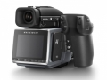

H6D并不是在现有中画幅H相机上加以改进，而是采用全新的技术元件和电子平台重新打造而成。H6D系列有两个版本：配备1亿像素CMOS传感器的H6D-100c，以及配备5000万像素CMOS传感器的H6D-50c。快门速度范围极广（最长60分钟，最短1/2000秒），ISO范围进一步扩大，另外，由于采用文件传输速度超快的USB 3.0 Type-C接口，拍摄速度大幅提升。完全兼容H系列镜头，而且可以选用更快的快门速度，应用范围也比前几代的产品更广。